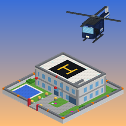
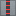
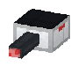
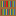
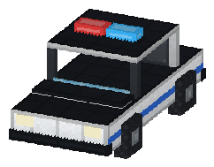
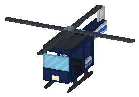
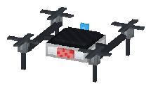

Bender Safe Mansion
A Minecraft add-on: build a giant safe mansion with one tap! Security cameras, laser gates, roof turrets, launch-pad traps, a secret vault, and a police car, helicopter and drone to keep the monsters out.
⬇️ Download for Minecraft
Version 1.0.1. For Minecraft Bedrock on iPad, iPhone, Android and Windows. Free, no ads.
How to put it on the iPad
- Tap Download for Minecraft above, then tap Download when Safari asks.
- Open the Files app, go to Downloads, and tap BenderSafeMansion.mcaddon. Minecraft opens and says Successfully imported.
If tapping the file doesn't open Minecraft, tap the Share button and choose Minecraft.
- In Minecraft, tap Create New World (or the pencil next to an old world). Scroll to Behavior Packs, tap Available, tap Bender Safe Mansion v1.0.1, then Activate. It works alongside the other Bender add-ons.
- Tap Create or Play. The first time you join, you get a Mansion Kit, a Security Remote, 4 cameras and a monitor.
Updating from an older version?
Minecraft keeps old copies next to new ones. The new one has its version in the name: Bender Safe Mansion v1.0.1.
- Download and import the new version as above.
- In Minecraft, go to Settings → Storage. Under Behavior Packs, delete the old Bender Safe Mansion copies (the ones without v1.0.1). Under Resource Packs, delete the old Bender Safe Mansion Textures copies.
- Open each world's settings and check Behavior Packs → Active. If it still shows an old copy, remove it and activate v1.0.1. When you join the world, the chat says which version is on.
How to build your mansion
- Find some open, flat land (a big field is perfect) and stand where you want the middle of the mansion.
- Hold the Mansion Kit and tap. A sparkly square shows where it will go (41 by 41 blocks). Everything inside gets replaced.
- Tap again to build. In a few seconds the whole mansion appears, with its vehicles and turrets.
- Changed your mind? Stand in the mansion, sneak and tap the kit twice. The land goes back exactly how it was.
A tour of the mansion
🏠 Downstairs
- Kitchen, dining room and a living room with a big TV
- The security room: tap a monitor to watch the cameras
- The garage with the police car
🛏️ Upstairs
- Two bedrooms: a blue one and an orange one
- A library. One bookshelf has a red book...
- ...and behind it, the secret vault full of treasure
🚁 The roof
- A helipad with the police helicopter
- The security drone
- Four laser turrets that zap monsters
🌳 The yard
- A pool, a driveway and garden lights
- A wall with motion sensors and a laser gate
- Launch pads hidden in the lawn
The security system
Everything here only zaps monsters. It never hurts players, pets or animals, and never breaks blocks.
Cameras & Monitors
Tap a monitor
Look through any camera. Jump for the next one, sneak to stop. It tells you when a camera can see a monster.

Laser Posts
Two posts make a laser
Red beams between two posts up to 8 blocks apart zap monsters and push them back. Players walk right through.
Motion Sensors
Watch the yard
When a monster gets in, the siren goes wee-woo, the sensors flash red and you get a message saying where it is.
Launch Pad Traps
Boing!
A monster that steps on one gets flung up and right out of the yard.

Laser Turrets
Zaps up to 20 blocks
They turn to face the nearest monster and zap it. Put more anywhere you like.
Security Doors
Only for players
They slide open when you walk up, and stay shut for monsters.

Secret Bookshelf
Tap the red book
It swings open for 5 seconds, and never closes while you're standing in it.
Police vehicles
Tap a vehicle to get in. Sneak to get out. Hit an empty one 3 times to pack it into a kit.

Police Car
Drives like a horse
Room for two. Tap the Security Remote for the siren and flashing lights.

Police Helicopter
Look and push forward to fly
Hold jump to climb. The remote zaps monsters. Look straight up and tap for the siren.

Security Drone
Fly it like the helicopter
Small and fast. The radar shows how many monsters are near and where the closest one is.
📡 The Security Remote
- Walking around: tap it to see if any monsters are inside your walls, watch the cameras from anywhere, or switch the alarm sounds off and on.
- Flying the drone or helicopter: tap to fire a laser where you're looking. It zaps every monster in a line.
- Driving the police car: tap for the siren.
- It also has a How to play page, in case you forget.
How to craft more
All the recipes are in the crafting table's recipe book.
- Security Camera (×2): iron ingot, observer, iron ingot in a row
- Security Monitor: 7 iron ingots around a glass pane, redstone at the bottom
- Laser Post (×2): redstone torch on top of 2 iron blocks
- Motion Sensor (×2): observer on top of a quartz block
- Launch Pad Trap (×2): slime block on top of a piston
- Security Door (×6): iron ingots down the left, glass down the right
- Secret Bookshelf: bookshelf on top of redstone
- Laser Turret: glowstone on top, 5 iron ingots and a block of redstone below
- Security Drone: 4 iron ingots in the corners, observer in the middle
- Police Car: redstone lamp, 3 white concrete, 2 blocks of coal for wheels
- Police Helicopter: 3 iron ingots, a redstone lamp, 3 blue concrete
- Security Remote: redstone, glass pane and iron ingot in a column
- Mansion Kit: 8 quartz blocks around a diamond
Good to know
- Garden lights in the lawn and on the roof keep monsters from appearing inside the walls. If the alarm goes off, something really did get in!
- Cameras you put up yourself show up in the camera list too. Place one facing the way you want it to look.
- If something hurts you while you're watching a camera, you go straight back to your own eyes.
- Laser turrets, sensors, lasers and launch pads work anywhere, not just at the mansion. Build your own security!
- A helicopter or drone you leave in the air floats gently down to the ground. Jumping out gives you slow falling.
- The Mansion Kit only builds in the Overworld, and not on water.
- Worlds with add-ons don't earn Xbox achievements.